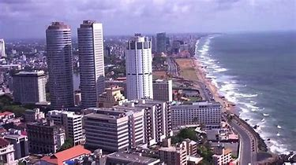
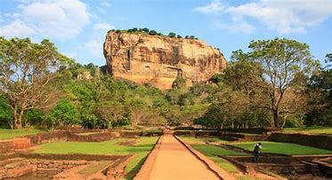
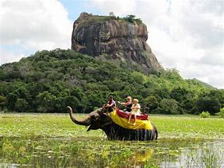
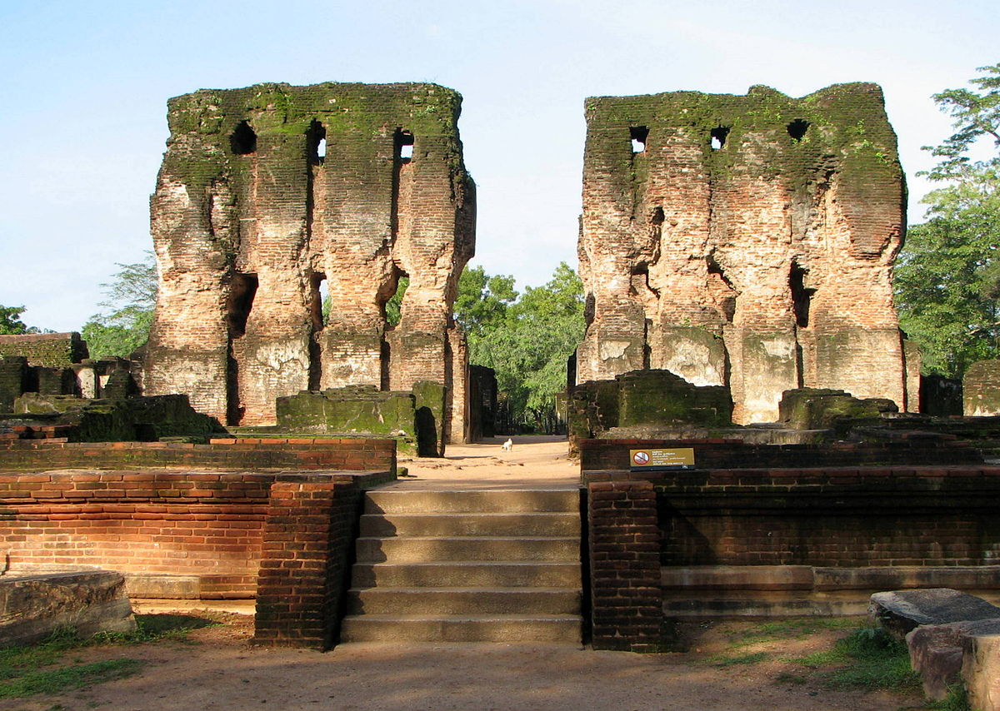
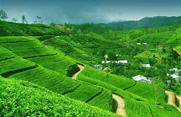
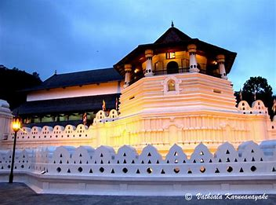
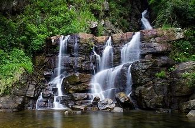
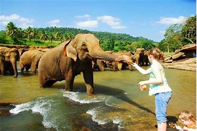
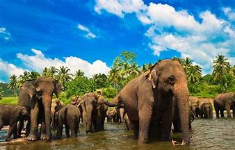

Welcome to Sri Lanka
Let's Travel With the Best Travellers in Sri Lanka
enim minim estudiat veniam siad venumus dolore
Details

Welcome to Sri Lanka
Let's Travel With the Best Travellers in Sri Lanka
The Elephants of Pinnawala
Read More

Welcome to Sri Lanka
Let's Travel With the Best Travellers in Sri Lanka
Tea States in Nuwara Eliya
Read More

Welcome to Sri Lanka
Let's Travel With the Best Travellers in Sri Lanka
Kandy
Read More

Welcome to Sri Lanka
Let's Travel With the Best Travellers in Sri Lanka
Ancient Rock Fortress Sigiriya
Read More

Welcome to Sri Lanka
Let's Travel With the Best Travellers in Sri Lanka
Pollonnaruwa
Read More
BEST PLACES IN SRI LANKA
COLOMBO
Colombo (/kəˈlʌmboʊ/; Sinhala: කොළඹ, romanized: Kolamba, pronunciation [ˈkəlɐmbɞ]; Tamil: கொழும்பு, romanized: Koḻumpu, Tamil pronunciation: [koɻumbu]) is the commercial capital[3] and largest city of Sri Lanka by population. According to the Brookings Institution, Colombo metropolitan area has a population of 5.6 million,[4][5][6][7] and 752,993[2] in the city proper. It is the financial centre of the island and a tourist destination.[8] It is located on the west coast of the island and adjacent to the Greater Colombo area which includes Sri Jayawardenepura Kotte, the legislative capital of Sri Lanka and Dehiwala-Mount Lavinia. Colombo is often referred to as the capital since Sri Jayawardenepura Kotte is within the urban area of, and a suburb of, Colombo. It is also the administrative capital of the Western Province and the district capital of Colombo District. Colombo is a busy and vibrant place with a mixture of modern life and colonial buildings and ruins.[9]
Due to its large harbour and its strategic position along the East–West sea trade routes, Colombo was known to ancient traders 2,000 years ago.[citation needed] It was made the capital of the island when Sri Lanka was ceded to the British Empire in 1815,[10] and its status as capital was retained when the nation became independent in 1948. In 1978, when administrative functions were moved to Sri Jayawardenepura Kotte, Colombo was designated as the commercial capital of Sri Lanka.



DAMBULLA
Dambulla (Sinhala: දඹුල්ල Dam̆bulla, Tamil: தம்புள்ளை Tampuḷḷai) is a town, situated in the north of Matale District, Central Province of Sri Lanka, situated 148 km (92 mi) north-east of Colombo, 43 km (27 mi) north of Matale and 72 km (45 mi) north of Kandy. Due to its location at a major junction, it is the centre of vegetable distribution in the country.
Major attractions of the area include the largest and best preserved cave temple complex of Sri Lanka, sigiriya rock fortress located in the division and the Rangiri Dambulla International Stadium, famous for being built in just 167 days. The area also boasts the largest rose quartz mountain range in South Asia, and the Iron wood forest, or Na Uyana Aranya.
Ibbankatuwa prehistoric burial site near Dambulla cave temple complexes is the latest archaeological site of significant historical importance found in Dambulla, which is located within 3 km (1.9 mi) of the cave temples providing evidence of the presence of indigenous civilisations long before the arrival of Indian influence on the Island nation.



POLONNARUWA
Poḷonnaruwa (Sinhala: පොළොන්නරුව, romanized: Poḷonnaruva; Tamil: பொலன்னறுவ, romanized: Polaṉṉaṟuvai) is the main town of Polonnaruwa District in North Central Province, Sri Lanka. Kaduruwela area is the Polonnaruwa New Town and the other part of Polonnaruwa remains as the royal ancient city of the Kingdom of Polonnaruwa.
The second most ancient of Sri Lanka's kingdoms, Polonnaruwa was first established by the Chola dynasty after their successful invasion of the country's then capital, Anuradhapura, in the 10th century. The Ancient City of Polonnaruwa has been declared a World Heritage Site.[1]
Currently the new Polonnaruwa is undergoing a major development project known as the "Awakening of Polonnaruwa" under the concept of President Maithripala Sirisena. It envisions the development of all sectors in Polonnaruwa including roads, electricity, agriculture, education, health and environment will be developed comprehensively.[



NUWARAELIYA
Nuwara Eliya (Sinhala: නුවර එළිය [nuwərə ɛlijə]; Tamil: நுவரெலியா) is a city in the hill country of the Central Province, Sri Lanka. Its name means "city on the plain (table land)" or "city of light". The city is the administrative capital of Nuwara Eliya District, with a picturesque landscape and temperate climate. It is at an altitude of 1,868 m (6,128 ft) and is considered to be the most important location for tea production in Sri Lanka. The city is overlooked by Pidurutalagala, the tallest mountain in Sri Lanka. Nuwara Eliya is known for its temperate, cool climate – the coolest area in Sri Lanka.



KANDY
Kandy (Sinhala: මහනුවර Mahanuwara, pronounced [mahanuʋərə]; Tamil: கண்டி Kandy, pronounced [ˈkaɳɖi]) is a major city in Sri Lanka located in the Central Province. It was the last capital of the ancient kings' era of Sri Lanka.[1] The city lies in the midst of hills in the Kandy plateau, which crosses an area of tropical plantations, mainly tea. Kandy is both an administrative and religious city and is also the capital of the Central Province. Kandy is the home of the Temple of the Tooth Relic (Sri Dalada Maligawa), one of the most sacred places of worship in the Buddhist world. It was declared a world heritage site by UNESCO in 1988.[2]



PINNAWALA
Pinnawala Elephant Orphanage is an orphanage, nursery and captive breeding ground for wild Asian elephants located at Pinnawala village, 13 km (8.1 mi) northeast of Kegalle town in Sabaragamuwa Province of Sri Lanka. Pinnawala has the largest herd of captive elephants in the world. In 2011, there were 96 elephants, including 43 males and 68 females from 3 generations, living in Pinnawala.[1]
The orphanage was founded to care and protect the many orphaned unweaned wild elephants found wandering in and near the forests of Sri Lanka. It was established in 1975 by the Sri Lanka Department of Wildlife Conservation (DWC).



Top
Top